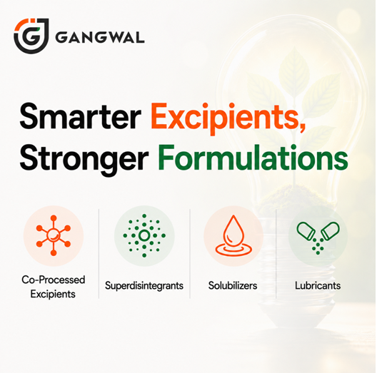

The Evolving Pharmaceutical Excipients Landscape: Trends, Challenges, and Growth Opportunities in 2026
8 August 2026
The pharmaceutical industry is undergoing a significant transformation driven by advances in drug development, complex formulations, personalized medicines, and stricter regulatory expectations. While Active Pharmaceutical Ingredients (APIs) often receive the spotlight, pharmaceutical excipients have become indispensable in ensuring product quality, stability, safety, and patient compliance.
For excipient manufacturers, this evolution presents both exciting opportunities and new challenges. Companies that invest in innovation, quality systems, regulatory compliance, and global digital visibility will be better positioned to meet the growing demands of pharmaceutical manufacturers worldwide.
The Expanding Role of Pharmaceutical Excipients
Modern excipients are no longer viewed as "inactive ingredients." Today, they perform critical functions that directly influence the performance of pharmaceutical formulations.
Excipients contribute to improving drug solubility and bioavailability, enhancing stability throughout shelf life, supporting controlled and sustained drug release, and improving tablet compressibility and taste masking.
As formulation complexity increases, pharmaceutical companies increasingly seek excipient suppliers that provide technical expertise rather than simply supplying raw materials.
Key Trends Shaping the Excipients Industry
1. Functional Excipients Are in High Demand
Drug developers increasingly require multifunctional excipients that can simplify formulations while improving manufacturing efficiency and product performance. For instance, direct compression grades, co-processed excipients, modified-release polymers, and multifunctional binders and fillers. These excipients help reduce processing steps while improving consistency and scalability.
2. Biopharmaceutical Growth
The rapid expansion of biologics, vaccines, peptides, and cell and gene therapies has increased demand for highly specialized excipients with exceptional purity and stability profiles. Pharmaceutical manufacturers capable of supplying high-quality, well-characterized excipients are becoming preferred partners for innovative drug developers.
Subsection Heading
As formulation complexity increases, pharmaceutical companies increasingly seek excipient suppliers that provide technical expertise rather than simply supplying raw materials.
3. Sustainability Is Becoming a Competitive Advantage
Environmental responsibility has become an important purchasing criterion. Pharmaceutical companies increasingly evaluate suppliers based on sustainable sourcing, green manufacturing practices, reduced carbon footprint, responsible waste management, etc. Excipient manufacturers adopting sustainable operations are strengthening their global competitiveness.
4. Supply Chain Resilience
Recent global disruptions highlighted the importance of secure and diversified supply chains.
Customers now prioritize suppliers that offer reliable manufacturing capacity, multiple production sites, robust quality management systems, and regulatory transparency. Building resilient supply networks has become a strategic differentiator
Regulatory Expectations Continue to Rise
Global pharmaceutical companies expect excipient suppliers to maintain robust compliance with international quality standards.
Important considerations include GMP compliance where applicable, comprehensive documentation, risk management, traceability, and consistent product quality. Strong regulatory support builds confidence and accelerates customer approvals.
Staying Ahead in an Evolving Industry
The pharmaceutical excipients industry will continue to evolve alongside advances in drug delivery technologies, regulatory expectations, and global healthcare needs.
Manufacturers that embrace innovation, invest in technical expertise, maintain uncompromising quality standards, and strengthen their digital presence will be well-positioned for long-term success.
In an increasingly competitive marketplace, differentiation is no longer achieved solely through manufacturing capabilities; it is built through knowledge, credibility, and meaningful engagement with customers.
Digital Visibility Matters More Than Ever
Many pharmaceutical purchasing teams and formulation scientists begin their supplier search online.
However, numerous excipient manufacturers still have websites that lack:
- Product-specific technical content
- SEO optimization
- Excipient application-focused information
- Regular technical blogs
This represents a significant missed opportunity.
Publishing high-quality technical content helps manufacturers:
- Improve search engine rankings
- Increase qualified website traffic
- Build scientific credibility
- Gain potential customers
- Generate high-quality business requests
Companies that consistently invest in technical content have higher chances of establishing themselves as trusted industry experts rather than simply material suppliers.

How Pharma Content Solutions Can Help
At Pharma Content Solutions, we help pharmaceutical excipient manufacturers transform complex scientific expertise into clear, engaging, and SEO-optimized content
Whether you need technical website content, product pages, SEO blogs, capability profiles, or thought leadership articles, our content is designed to improve your online visibility while communicating your technical strengths to the right audience.
Your science deserves to be discovered. We help make that happen.
Your science deserves to be discovered. We help make that happen.